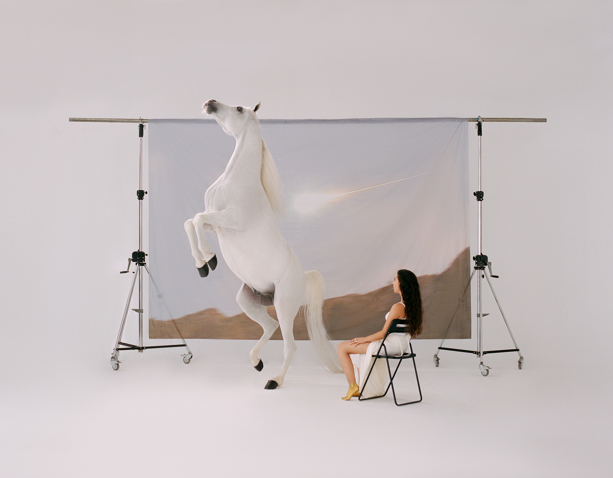

Experiment 8: "."
Date: May 2020
Dimensions: 594 x 841 mm
This poster was based around the circle as a motif for my work. The frame within frame, layered imagery refers to the reflexive and cyclical nature of my approach to designing.
The brief for this project was to make a poster that represents a key idea of our research using 3 basic shapes (●■▴) and Helvetica (think Swiss modernism). At the time I was reading a book called Absence of Clutter : Minimal Writing as Art and Literature, so I was thinking of the different meanings and interpretations of these shapes, one being punctuation marks.
In typography a circle can be a full stop (ironically the full stop in Helvetica is a ■). Symbolically it can be a void, a cycle (with no apparent start or finish) or the centre of something.

I didn't think a Swiss style poster would represent my project very well so I wanted to use photography and the scanner to create an image-within-an-image. A reference I thought of was photography by Paloma Wool that often breaks the fourth wall by including the surrounding fixtures that show how the image was made, but when I attempted to take some photos it didn't work as I imagined it in my mind, so I moved away from a purely photographic poster.

At the time of conceptualising the poster I was looking at work by OK-RM and it seems like "meta-ness" is a reoccuring idea in their publication projects, as in the design refers to and represents the function and physical form of books (especially through the imagery of hands). In this poster hands represent the making but also how I look reflexively back at my work in order to observe it.
The text underneath the image is a dot-point symbol in quotation marks, which refers back to the circle and a full stop but also doesn't explicitly convey a meaning. This small typographic detail prompts the viewer to step toward and look closer a the poster, and bring meaning to it based on their own interpretation.